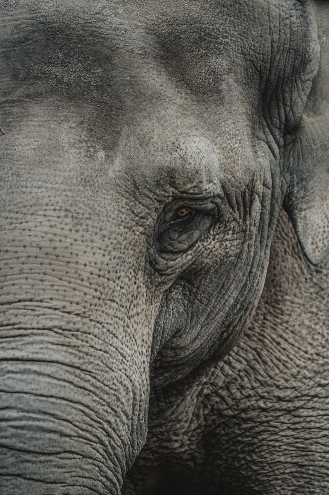

ELEPHANT DEATHS: ARE KERELA AND BOTSWANA IN THE SAME BOAT?
The inhuman behaviour of killing the animals cruelly is getting increased day-by-day. With what has happened recently in Palakkad district of Kerala, India, furious reactions of people have taken the social media like a storm. The political controversies regarding the case have made several things to come to light. One of the things which needs to be focused is that the killing of elephants reaches up to the 600 mark every year. However, this case has crossed the limits of inhumanity.
A shocking and heart breaking news flashed over the social media, on 27 May, that a pregnant elephant was fed a pineapple which was stuffed with explosives. After keeping it the pineapple in her mouth, the crackers exploded which damaged her jaw. Because of this reason, she got many injuries and went into a river due to the excruciating pain. In the end, she died in the river while standing there.
The incident of Kerala has been matched with the Botswana case where such happenings are approved by the ministers. In the Botswana area, hundreds of elephants were found dead this July with the reasons unknown. Similar cases were found in the year 2015 where the satellite images captured the dead elephants around a pond.
2020 has been a drastic year for all the living beings. Each one is facing life-threatening situations which is making them vulnerable and pitiful. While the people of Kerala stated that the elephants were a threat to their agricultural living, the people of Botswana found the population of elephants troublesome on the same grounds. But does that mean we are entitled to take the lives?
With a tremendous increase in the population of Africa’s Botswana, which claim to have a stronghold over the remaining population of the elephants of the continent, a strong escalated struggle for space started some time back. The people demanded land but could not gain it due to the equal amount of forests and the huge number of elephants residing in it. While some people saw them at odds, some saw them as destroyer of their livelihoods.
Since the communities were struggling to co-exist with the elephants, issue took a political turn. Under the political controversies which were spreading to each and every year all around the world, Mokgweetsi Masisi, the president, lifted the ban on hunting of elephants in Botswana in order to reduce their number and generate income from that. But under the case of Kerala, the way ministers are giving statements that each and everyone will get punished, is that what they will actually implement?
Every year, thousands of animals are killed, both legally and illegally, all around the world for their body parts such as tusks, teeth and so on. Such cases came out in 2018 Botswana case where 90 elephants were found dead, being a victim of brutality, as when the bodies were examined, their teeth were missing. The green flag to hunt the animals have led to a drastic decrease in their numbers and an increase in the number of smuggling cases. Based on sources, it is said that nearly 2 Lakh cases of smuggling of animals has taken place the previous year in the Sawana region.
The collected data of Indian forest Department shows that the Kerala holds more than 150 deaths alone every year. Maneka Gandhi, after the brutal incident of elephant killing came forward, claimed that over 600 elephants are killed in the particular district every year.
2 FACES OF A STORY
If we compare the two situations, i.e. of Botswana and Kerala, we come across two points which may or may not be directly visible.
The politicization of every issue has led to the to the shifting of focus of main agenda which gets trapped into the political controversies. No consequences and no outcomes are suggested after the political controversies in most of the cases.
People think of themselves as the supreme authority in this mortal world. Yes, not advanced but supreme. They command the rights to take the lives of other living beings for their own desires.
Is this what is the sole conclusion for everything? Does this situation have an answer? Do we have to assume the conclusion that if the discrimination is sharp even in the human kind, then animals are not a match? There are several questions which need to be answered. There is no claim which we can make. What we can do is to analyze and keep it within ourselves. But is this the end? We need to wait and just see to this long-road to analyze whether the road is to development or to doom.
Leave a Suggestion